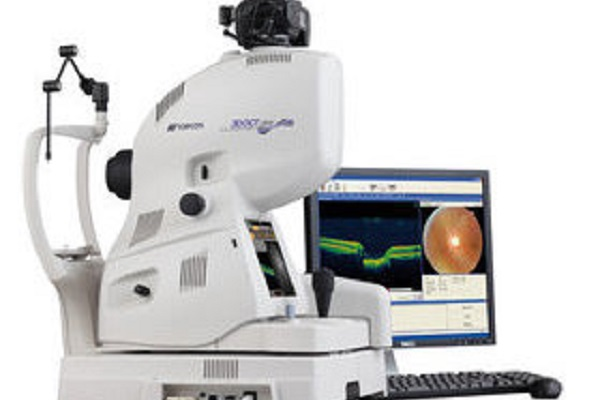
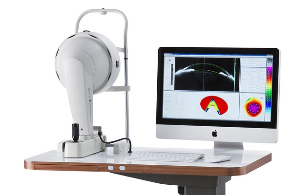
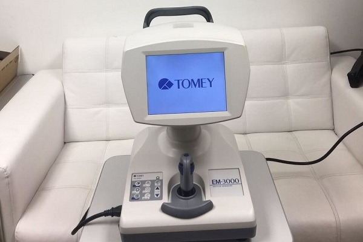
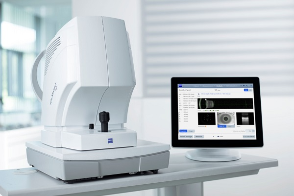

-
We Use The Best Technology
-
OCT
Optical Coherence Tomography (OCT) is a non-invasive diagnostic technique that renders an in vivo cross-sectional view of the retina. OCT utilizes a concept known as interferometry to create a cross-sectional map of the retina that is accurate to within at least 10-15 microns.
 -
Pentacam
The Pentacam system is one of the most commonly used commercially available systems for this purpose. Through a rotating Scheimpflug camera, the system is capable of creating a three-dimensional map of the cornea.
 -
Specular Microscopy
Specular microscopy is a non-invasive diagnostic modality to image the corneal endothelium. It allows detailed in vivo analysis of corneal endothelium in healthy and diseased eyes. Specular microscopy helps in the diagnosis and management of several endothelial pathologies.
 -
IOL Master 700
he IOLMaster 700 is the entry point to the ZEISS Cataract Suite. Intended to reduce the risk of refractive surprises, this device provides highly repeatable and accurate lens thickness, anterior chamber depth, and corneal thickness measurements of the eye.
 -
B-Scan
B-scan ultrasonography is an important adjuvant for the clinical assessment of various ocular and orbital diseases. With understanding of the indications for ultrasonography and proper examination technique, one can gather a vast amount of information that cannot be obtained through clinical examination alone.